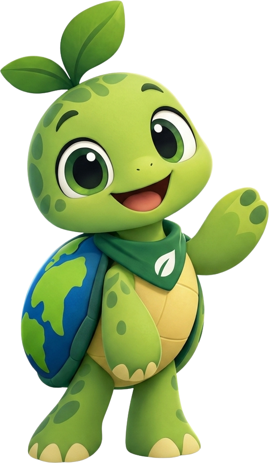

Aprenda brincando
Juntos por um
Juntos por um
planeta melhor!
Jogos e dicas rápidas com o Tito, a tartaruga que cuida do mundo, para aprender a proteger a natureza.

Juntospor um planeta
melhor!
Como cuidar do planeta
Economizar água
Usar energia com sabedoria
Cuidar da natureza
Hora de jogar!
Memória, quiz, quebra-cabeça, lixeira certa e mais. Escolha um jogo e ajude o Tito.